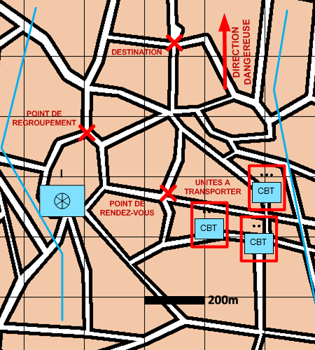

NIVEAU : Automate
ARME : ORGANISATIONS
MISSION : Transporter
NIVEAU : Automate
ARME : ORGANISATIONS
MISSION : Transporter
Schéma de modélisationTransporter |
Paramètres obligatoiresDirection DangereuseDirection vers laquelle orienter les capteurs. Fuseau Zone de responsabilité. Unités Les unités à transporter. Point de rendez-vous Point ou rejoindre les unités à transporter. Destination Point à rejoindre par les unités transportées. Point de regroupement Point à rejoindre à la fin du transport. |
|
Paramètres optionnelsLignes de début et fin de mission [LDM/LFM] |
||
 |
Fiches missions |  |